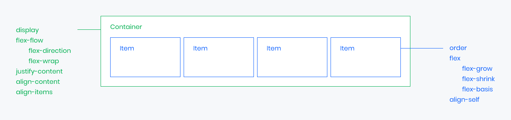

블록, 인라인, 테이블, 플로트를 이용한 레이아웃 구성 방식은 다양한 문제를 가지고 있습니다.
플렉스 박스 레이아웃을 사용하면 플로트 또는 위치 지정을 사용하지 않고 유연한 반응형 레이아웃 구조를 더욱 쉽게 설계할 수 있습니다.
플렉스는 Container와 Items 두 개의 개념으로 나뉩니다.
Container는 Items를 감싸는 부모 요소이며, 각 Item을 정렬하기 위해 Container는
필수입니다.
Container와 Items에 적용하는 속성이 구분된 점을 주의해야 합니다.
Container에는 display, flex-flow, justify-content의 속성을
사용하고, Items에는 order, flex, align-self의 속성을 사용할 수 있습니다.

플렉스 컨테이너 속성은 다음과 같습니다.
| Property | Description |
|---|---|
| display | Flex Container를 정의 |
| flex-flow | flex-direction와 flex-wrap의 단축 속성을 제공 |
| flex-direction | Flex Items의 주 축(main-axis)을 설정 |
| flex-wrap | Flex Items의 여러 줄 묶음(줄 바꿈) 설정 |
| justify-content | 주 축(main-axis)의 정렬 방법을 설정 |
| align-content | 교차 축(cross-axis)의 정렬 방법을 설정(2줄 이상) |
| align-items | 교차 축(cross-axis)에서 Items의 정렬 방법을 설정(1줄) |
display 속성으로 Flex Container를 정의합니다.
display: flex;로 지정된 Flex Container는 Block 요소와 같은 방식(수직으로 쌓임)을 가지며,
display: inline-flex로 지정된 Flex Container는 Inline(Inline Block) 요소와 같은 방식(수평으로 쌓임)을 가집니다.
위에서 말하는 수직과 수평으로 쌓이는 것은 Items가 아니라 Container라는 것에 주의해야 합니다. 두 값은 내부에 Items에 영향을 주지 않습니다.
| Property | Description |
|---|---|
| display | Flex Container를 정의 |
| flex-flow | flex-direction와 flex-wrap의 단축 속성을 제공 |
Flex Items의 주 축(main-axis)을 설정하고 Items의 여러 줄 묶음(줄 바꿈)도 설정합니다.
| Value | Description |
|---|---|
| flex-direction | Items의 주 축(main-axis)을 설정 |
| flex-wrap | Items의 여러 줄 묶음(줄 바꿈) 설정 |
Items의 주 축(main-axis)을 설정합니다.
| Value | Description |
|---|---|
| row | Itmes를 수평축(왼쪽에서 오른쪽으로)으로 표시 |
| row-reverse | Items를 row의 반대 축으로 표시 |
| column | Items를 수직축(위에서 아래로)으로 표시 |
| column-reverse | Items를 column의 반대 축으로 표시 |
Items의 여러 줄 묶음(줄 바꿈)을 설정합니다.
기본적으로 Items는 한 줄에서만 표시되고 줄 바꿈 되지 않습니다.
이는 지정된 크기(주 축에 따라 width나 height)를 무시하고 한 줄 안에서만 가변합니다.
Items를 줄 바꿈 하려면 값으로 wrap을 사용해야 합니다.
| Value | Description |
|---|---|
| nowrap | 모든 Itmes를 여러 줄로 묶지 않음(한 줄에 표시) |
| wrap | Items를 여러 줄로 묶음 |
| wrap-reverse | Items를 wrap의 역 방향으로 여러 줄로 묶음 |
주 축(main-axis)의 정렬 방법을 설정합니다.
기본적으로 Items는 한 줄에서만 표시되고 줄 바꿈 되지 않습니다.
이는 지정된 크기(주 축에 따라 width나 height)를 무시하고 한 줄 안에서만 가변합니다.
Items를 줄 바꿈 하려면 값으로 wrap을 사용해야 합니다.
| Value | Description |
|---|---|
| flex-start | Items를 시작점으로 정렬 |
| flex-end | Items를 끝점으로 정렬 |
| center | Items를 가운데 정렬 |
| space-between | 시작 Item은 시작점에, 마지막 Item은 끝점에 정렬되고 나머지 Items는 사이에 고르게 정렬 |
| space-around | Items를 균등한 여백을 포함하여 정렬 |
교차 축(cross-axis)의 정렬 방법을 설정합니다.
주의할 점은 flex-wrap 속성을 통해 Items가 여러 줄(2줄 이상)이고 여백이 있을 경우만 사용할 수
있습니다.
기본적으로 Items는 한 줄에서만 표시되고 줄 바꿈 되지 않습니다.
이는 지정된 크기(주 축에 따라 width나 height)를 무시하고 한 줄 안에서만 가변합니다.
Items를 줄 바꿈 하려면 값으로 wrap을 사용해야 합니다.
| Value | Description |
|---|---|
| stretch | Container의 교차 축을 채우기 위해 Items를 늘림 |
| flex-start | Items를 시작점으로 정렬 |
| flex-end | Items를 끝점으로 정렬 |
| center | Items를 가운데 정렬 |
| space-between | 시작 Item은 시작점에, 마지막 Item은 끝점에 정렬되고 나머지 Items는 사이에 고르게 정렬 |
| space-around | Items를 균등한 여백을 포함하여 정렬 |
교차 축(cross-axis)에서 Items의 정렬 방법을 설정합니다.
Items가 한 줄일 경우 많이 사용합니다.
| Value | Description |
|---|---|
| stretch | Container의 교차 축을 채우기 위해 Items를 늘림 |
| flex-start | Items를 각 줄의 시작점으로 정렬 |
| flex-end | Items를 각 줄의 끝점으로 정렬 |
| center | Items를 가운데 정렬 |
| baseline | Items를 문자 기준선에 정렬 |